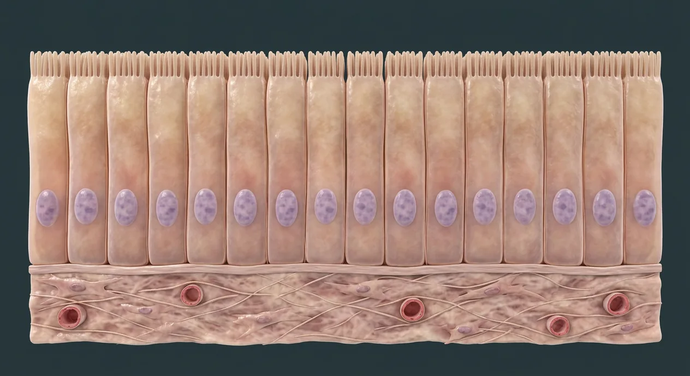

Epithelial
Simple columnar example
Explore cell components and epithelial, connective, skeletal-muscle and nervous examples through four separate microscopic-scale teaching cutaways.

Cells organize into tissues, and organs contain combinations of epithelial, connective, muscular and nervous tissues. The main image illustrates a single layer of columnar epithelium above connective tissue; epithelium itself has no capillaries. Separate tissue-scale digital cutaways illustrate loose areolar connective tissue, skeletal muscle and a multipolar neuron. Cell organelles and some specialized tissue subtypes are described in text rather than falsely pinned on these images. These are computer-generated educational models, not histology slides, quantified microscopy or diagnostic samples.
Digital microscopic-scale teaching cutaways, not real histology slides. Each plate shows a particular example, not every subtype.
Simple columnar example
Loose areolar example
Skeletal muscle example
Multipolar neuron model
These 2 structures describe anatomy related to the chapter’s regional illustration. Each entry separates location, function and a clinical point.
Close-packed cell sheets cover body surfaces, line passages and form much glandular tissue; the image depicts one simple columnar example.
What it doesProvides selective barrier, absorption, transport and secretion.
Clinical connectionThis is a digital teaching cutaway, not a patient histology slide or a picture of every epithelium.
Specialized extracellular layer beneath epithelial cells, shown as a fine strip above vascular connective tissue.
What it doesAnchors and organizes the epithelial sheet.
Clinical connectionBasement membrane in tissue sections often includes more than the basal lamina alone.
These 26 additional entries give anatomical context. They are deliberately not assigned a photographic pin on the regional image.
A cell is a membrane-bound living unit with internal components that perform metabolism and communication.
What it doesCombines organelles to maintain tissue function.
Clinical connectionA cutaway is a stylized model, not a universal cell portrait.
Lipid bilayer with embedded proteins separates cell interior from extracellular fluid.
What it doesRegulates exchange, signaling and cellular identity.
Clinical connectionIts molecular bilayer cannot be directly resolved on a gross organ plate.
Cytoplasm includes cytosol and organelles outside the nucleus; cytosol is the fluid component.
What it doesHosts much of cellular metabolism.
Clinical connectionDo not treat the two terms as exact synonyms.
Membrane-enclosed compartment holding most nuclear DNA in many human cell types.
What it doesCoordinates gene expression and cell division.
Clinical connectionMature red blood cells lack a nucleus; visible ovals on this plate are idealized epithelial nuclei.
Double-membrane organelles that generate much cellular ATP through oxidative phosphorylation.
What it doesProvide energy for many cellular activities.
Clinical connectionMitochondrial shapes on this digital cell model are illustrative, not microscopy.
Ribosomes translate messenger RNA; those bound to rough endoplasmic reticulum make many secreted and membrane proteins.
What it doesSupports protein synthesis and processing.
Clinical connectionRibosome dots on this teaching model are not individually identifiable microscopy.
Stacked membrane compartments that modify and sort proteins and lipids.
What it doesDirects cargo toward secretion, membrane or lysosomal pathways.
Clinical connectionThe colored Golgi-like stack is a digital teaching aid, not a clinical specimen.
Noncellular network of fibrous proteins and hydrated ground substance outside connective-tissue cells.
What it doesSupports tissues and influences cell signaling.
Clinical connectionIts composition varies between areolar tissue, cartilage, tendon and bone.
The free epithelial cell surface faces a lumen or environment, while the basal side faces the underlying support.
What it doesAllows directional absorption, secretion and barrier function.
Clinical connectionApical microvilli on the plate are schematic and cannot classify a specimen alone.
Simple epithelium has one cell layer; stratified epithelium has multiple layers. This plate depicts a simple arrangement.
What it doesRelates layer number to transport or protective roles.
Clinical connectionPseudostratified epithelium appears layered but every cell contacts the basal lamina.
Cells are dispersed in an extracellular matrix; the companion plate illustrates loose areolar connective tissue.
What it doesSupports and integrates tissues, with many specialized forms.
Clinical connectionBone, cartilage and blood are distinct connective-tissue forms, not the same as areolar tissue.
Spindle-shaped cells synthesize components of connective extracellular matrix, including collagen.
What it doesMaintains and remodels connective tissue.
Clinical connectionDigital cell shapes alone cannot substitute for a histologic diagnosis.
Protein fibers provide tensile support; loose areolar tissue contains scattered wavy bundles.
What it doesResists stretch and mechanical load.
Clinical connectionFiber amount and type change with tissue and disease.
Small vessel in supporting connective tissue carries blood near, not into, the epithelial sheet.
What it doesSupplies nutrients that diffuse toward avascular epithelium.
Clinical connectionThis schematic is not a scale-accurate microvascular map.
Excitable cells shorten and produce force; skeletal, cardiac and smooth muscle are three distinct types.
What it doesSupports movement, circulation and organ wall function.
Clinical connectionThe accompanying striated plate depicts skeletal muscle only.
Long multinucleated, striated contractile cell with peripheral nuclei in normal skeletal muscle.
What it doesProduces voluntary skeletal movement.
Clinical connectionThe illustrated longitudinal section should not be confused with branching cardiac muscle.
Thin connective-tissue layer surrounding each individual skeletal muscle fiber.
What it doesSupports small vessels and transmits contractile forces.
Clinical connectionPerimysium instead surrounds bundles of fibers.
Striated, typically branched cardiomyocytes join through intercalated discs in the heart.
What it doesGenerates coordinated cardiac pumping.
Clinical connectionThis illustration is a stylized cardiac example, not a diagnostic histology slide.
Nonstriated spindle-shaped contractile cells occur in walls of many hollow organs and vessels.
What it doesControls lumen diameter and organ-wall motion.
Clinical connectionThis plate is a stylized smooth-muscle example, not diagnostic histology.
Neurons and supporting glia form excitable networks in central and peripheral nervous systems.
What it doesDetects, processes and transmits information.
Clinical connectionIllustrated neuron and myelin are teaching-scale models, not micrographs.
Soma houses cell machinery and receives signals through branching dendrites; form varies with neuron class.
What it doesIntegrates synaptic inputs.
Clinical connectionA multipolar example cannot represent all neuronal morphologies.
Single main output process carries electrical impulses away from a neuron’s initial segment; it may have collaterals.
What it doesCommunicates toward synaptic targets.
Clinical connectionThe illustrated path is conceptual, not a clinical nerve map.
Repeated myelin segments electrically insulate portions of some axons, leaving short gaps called nodes of Ranvier.
What it doesSupports rapid saltatory conduction.
Clinical connectionNot every axon is myelinated and different glia myelinate CNS and PNS axons.
Astrocytes, oligodendrocytes, microglia and Schwann cells have different CNS or PNS roles.
What it doesSupport neurons, homeostasis and myelin formation.
Clinical connectionThe small background cells here are generic, not separately identifiable glial subtypes.
Epithelial, connective, muscle and nervous tissue are the four broad human tissue families.
What it doesProvides a framework for reading tissue architecture.
Clinical connectionAn organ usually contains more than one tissue type.
Histology examines prepared tissue sections with microscopy; these four generated images are stylized educational cutaways.
What it doesDistinguishes tissue concepts from diagnostic specimens.
Clinical connectionNever diagnose disease or claim real staining or magnification from these images.
Short answers grounded in the structures described above. Use the illustrated guide for anatomical context.
The broad categories are epithelial, connective, muscle and nervous tissue. Most organs contain multiple types; the images show specific teaching examples, not all subtypes.
Epithelia form close-packed sheets with apical and basal surfaces and little extracellular space. Connective-tissue cells are often dispersed in extracellular matrix. Epithelium is generally avascular and nourished from underlying tissues.
No. They are digitally generated microscopic-scale educational cutaways rather than histology specimens, patient images, measured magnifications or diagnostic evidence.
The striated, multinucleated parallel fibers depict a skeletal-muscle example. Smooth muscle is not striated, and cardiac muscle differs in branching and intercalated discs; neither has a dedicated picture in this batch.
Nervous tissue contains signaling neurons and supporting glial cells. The example shows a multipolar neuron with dendrites, an axon and myelin on some axon segments, not a map of a named clinical nerve.
Follow these connected structures and body systems in the illustrated atlas.
 Anatomical language · planes & movementLearn patient right and left, body planes, directional terms and movements without false image pins.↗
Anatomical language · planes & movementLearn patient right and left, body planes, directional terms and movements without false image pins.↗ Body cavities · regions & quadrantsTrace dorsal and ventral cavities, serous spaces and patient-oriented abdominal quadrants and regions.↗
Body cavities · regions & quadrantsTrace dorsal and ventral cavities, serous spaces and patient-oriented abdominal quadrants and regions.↗ Skin layers & appendagesThe five thick-skin epidermal strata, two dermal zones, hypodermis, receptors and follicle–gland units.↗
Skin layers & appendagesThe five thick-skin epidermal strata, two dermal zones, hypodermis, receptors and follicle–gland units.↗ Small intestine · wall & enteric plexusesMap villus–crypt renewal, epithelial cell types, capillaries and lacteals, plus two enteric nerve plexuses.↗
Small intestine · wall & enteric plexusesMap villus–crypt renewal, epithelial cell types, capillaries and lacteals, plus two enteric nerve plexuses.↗General anatomy references and related source chapters for continued study. These links do not make the digital illustrations clinical images or certify every anatomical variant.
This educational page is not medical advice and has not undergone formal clinical peer review. Spotted an error? Contact the editor.
Open the realistic interactive plate, label lines, focus view and self-test.